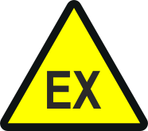
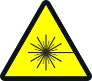
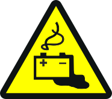
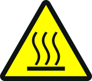

安全注意事项
必须遵守安全注意事项，以保护人员和财产。
本文档中的安全注意事项包含以下内容：
- Symbol for danger
- Signal word
- Nature and origin of the danger
- Consequences if the danger occurs
- Measures or prohibitions for danger avoidance
Symbol for danger
| 这是危险的象征。它警告risks of injury. 请遵循此符号标识的所有措施，以避免受伤或死亡。 |

Additional danger symbols
这些符号表示一般危险、危险类型或可能的后果、措施和禁止事项，其示例如下表所示：
| 一般危险 |  | 爆炸性气氛 |
| 电压/electric冲击 |  | 激光灯 |
 | 电池 |  | 热 |

Signal word
信号词对危险进行分类，如下表所定义：
信号词 | 危险等级 |
|---|---|
DANGER | “DANGER”标识了危险情况，will result directly in death or serious injury如果不避免这种情况。 |
WARNING | “WARNING”标识了危险情况，may result in death or serious injury如果不避免这种情况。 |
CAUTION | “CAUTION”标识了危险情况，这可能会导致slight tomoderately serious injury如果不避免这种情况。 |
| |
NOTICE | 'NOTICE” 指出可能因不遵守而造成的有害情况或可能造成的财产损失。 'NOTICE' 与可能的身体伤害无关。 |
How risk of injury is presented
有关受伤风险的信息如下：
 WARNING
WARNING

危险的性质和根源
发生危险时的后果
- Measures / prohibitions for danger avoidance
How possible damage to property is presented
有关可能造成的财产损失的信息如下：
NOTICE

危险的性质和根源
发生危险时的后果
- Measures / prohibitions for danger avoidance